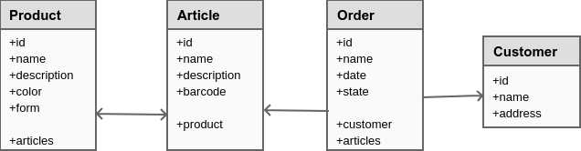

Before we dive into the entire model, let's show an example and how it would be modelled in Strolch and use in Strolch:
A possible model would look as follows:
<?xml version="1.0" encoding="UTF-8" ?>
<StrolchModel xmlns="https://strolch.li/xsd/StrolchModel-1.6.xsd">
<Resource Id="Product" Name="Product Template" Type="Template">
<ParameterBag Id="parameters" Name="Parameters" Type="Parameters">
<Parameter Id="description" Name="Description" Type="String" Value=""/>
<Parameter Id="color" Name="Color" Type="String" Value=""/>
<Parameter Id="form" Name="Form" Type="String" Value=""/>
</ParameterBag>
<ParameterBag Id="relations" Name="Relations" Type="Relations">
<Parameter Id="articles" Name="Articles" Type="StringList" Interpretation="Resource-Ref" Uom="Article" Value=""/>
</ParameterBag>
</Resource>
<Resource Id="Article" Name="Article Template" Type="Template">
<ParameterBag Id="parameters" Name="Parameters" Type="Parameters">
<Parameter Id="description" Name="Description" Type="String" Value=""/>
<Parameter Id="barcode" Name="Barcode" Type="String" Value=""/>
</ParameterBag>
<ParameterBag Id="relations" Name="Relations" Type="Relations">
<Parameter Id="product" Name="Product" Type="String" Interpretation="Resource-Ref" Uom="Product" Value=""/>
</ParameterBag>
</Resource>
<Resource Id="Customer" Name="Customer Template" Type="Template">
<ParameterBag Id="address" Name="Address" Type="Address">
<Parameter Id="street" Name="Street" Type="String" Value=""/>
<Parameter Id="zip" Name="Zip" Type="String" Value=""/>
<Parameter Id="city" Name="City" Type="String" Value=""/>
<Parameter Id="country" Name="Country" Type="String" Value=""/>
</ParameterBag>
</Resource>
<Order Id="Order" Name="Order" Type="Template">
<ParameterBag Id="quantities" Name="Quantities per Article Id" Type="Quantities">
<Parameter Id="quantity" Name="Quantity" Type="Float" Value="0"/>
</ParameterBag>
<ParameterBag Id="relations" Name="Relations" Type="Relations">
<Parameter Id="articles" Name="Articles" Type="StringList" Interpretation="Resource-Ref" Uom="Article" Value=""/>
<Parameter Id="customer" Name="Customer" Type="String" Interpretation="Resource-Ref" Uom="Customer" Value=""/>
</ParameterBag>
</Order>
</StrolchModel>
Let's go through this model:
In the above model we see that the
idandnamefields are always on the element, and thus aren't added as parameters. Further most elements have aparametersParameterBag, with one or more parameters, modelling the fields.Note that in this example the
Typeof all the elements isTemplate. Strolch has API support to create a clone of these elements, so that they have a unique ID, and the proper type for persistence.The
Productelement has three parameters:description,colorandform. In this case they are all of type String. Further therelationsParameterBag defines the relationships, i.e. the product knows its articles. Note how the relation is first defined in arelationsParameterBag and that the Parameter hasInterpretation="Resource-Ref" Uom="Product"attributes. Strolch has API support for this, making it trivial to retrieve a dependency.The
Articleelement has two parametersdescriptionandbarcode. Further it has a reference to its Product.- The
Orderelement doesn't model thedateandstatefields as parameters, as these are inherently part of an Order element. The Order does define two references tocustomerandarticles. A special case is thequantitiesParameterBag. This bag of parameters is used to store the per article quantity for this order. With ParameterBags, you can eliminate the use of simple aggregate classes, as is commonly used in object-oriented programming. - The
Customerelement models aaddressParameterBag to store the address of a customer. Using a separate bag allows for further more direct fields to stored on the defaultparametersbag.
Now that we have a basic understanding of te model, it is of far more interest in how to create and interact with these elements at runtime. The following listing will perform simple operations:
try (StrolchTransaction tx = runtimeMock.openUserTx(certificate, false)) {
/*
* create a new product
*/
Resource dafalgan = tx.getResourceTemplate("Product", true);
dafalgan.setName("Dafalgan 100mg");
dafalgan.getParameter("description", true).setValue("Dafalgan is for pain.");
dafalgan.getParameter("color", true).setValue("Yellow");
dafalgan.getParameter("form", true).setValue("flat");
StringListParameter articlesP = dafalgan.getRelationsParam("articles", true);
/*
* create articles
*/
Resource dafalgan1 = tx.getResourceTemplate("Article", true);
dafalgan1.setName("Dafalgan 100mg 10 pce");
dafalgan1.getParameter("description", true).setValue("This is pack with 10 pieces.");
dafalgan1.getParameter("barcode", true).setValue("654654");
Resource dafalgan2 = tx.getResourceTemplate("Article", true);
dafalgan2.setName("Dafalgan 100mg 20 pce");
dafalgan2.getParameter("description", true).setValue("This is pack with 20 pieces.");
dafalgan2.getParameter("barcode", true).setValue("654655");
/*
* add reference to product
*/
dafalgan1.getRelationParam("product").setValue(dafalgan.getId());
articlesP.addValue(dafalgan1.getId());
dafalgan2.getRelationParam("product").setValue(dafalgan.getId());
articlesP.addValue(dafalgan2.getId());
/*
* create a new customer
*/
Resource customer1 = tx.getResourceTemplate("Customer", true);
customer1.setName("John Doe");
// set address
ParameterBag addressBag = customer1.getParameterBag("address", true);
addressBag.getParameter("street", true).setValue("Main Str. 1");
addressBag.getParameter("zip", true).setValue("1234");
addressBag.getParameter("city", true).setValue("Hometown");
addressBag.getParameter("country", true).setValue("Switzerland");
/*
* create a new order
*/
Order order = tx.getOrderTemplate("Order", true);
order.setName("Order for " + customer1.getName());
order.setDate(LocalDate.of(2021, 2, 1));
order.setState(State.PLANNED);
// store reference to customer
order.getRelationParam("customer", true).setValue(customer1.getId());
StringListParameter orderArticlesP = order.getRelationsParam("articles", true);
ParameterBag quantitiesBag = order.getParameterBag("quantities", true);
FloatParameter quantityT = quantitiesBag.removeParameter("quantity");
// order quantity of 20 for Dafalgan 1
FloatParameter q1P = quantityT.getClone();
q1P.setId(dafalgan1.getId());
q1P.setValue(20);
quantitiesBag.addParameter(q1P);
orderArticlesP.addValue(dafalgan1.getId());
// set order quantity of 10 for Dafalgan 2
FloatParameter q2P = quantityT.getClone();
orderArticlesP.addValue(dafalgan2.getId());
q2P.setId(dafalgan2.getId());
q2P.setValue(20);
quantitiesBag.addParameter(q2P);
// keep IDs for later use
dafalganId = dafalgan.getId();
dafalgan1Id = dafalgan1.getId();
dafalgan2Id = dafalgan2.getId();
customerId = customer1.getId();
orderId = order.getId();
/*
* persist
*/
tx.add(dafalgan);
tx.add(dafalgan1);
tx.add(dafalgan2);
tx.add(customer1);
tx.add(order);
// commit
tx.commitOnClose();
}
try (StrolchTransaction tx = runtimeMock.openUserTx(certificate, true)) {
// get order
Order order = tx.getOrderBy("Order", orderId, true);
assertNotNull(orderId);
assertEquals("Order for John Doe", order.getName());
// get customer
Resource customer = tx.getResourceByRelation(order, "customer", true);
assertNotNull(customer);
assertEquals("John Doe", customer.getName());
// get articles
List<Resource> articles = tx.getResourcesByRelation(order, "articles", true);
assertEquals(2, articles.size());
// get products
List<Resource> products = articles.stream().map(a -> tx.getResourceByRelation(a, "product", true))
.distinct().collect(Collectors.toList());
assertEquals(1, products.size());
// search for all orders in state PLANNED and with customer
List<Order> orders = new OrderSearch().types("Order").stateIsIn(State.PLANNED)
.where(ExpressionsSupport.relationParam("customer").isEqualTo(customerId)).search(tx).toList();
assertEquals(1, orders.size());
}
Note: Checkout example-model.xml and SimpleModelTest.java for these examples.
There is a XML Schema which defines the model in XML: StrolchModel-1.6.xsd
Here is an example of all the possible elements in Strolch:
<StrolchModel xmlns:xsi="http://www.w3.org/2001/XMLSchema-instance"
xmlns="https://strolch.li/xsd/StrolchModel-1.6.xsd"
xsi:schemaLocation="https://strolch.li/xsd/StrolchModel-1.6.xsd StrolchModel-1.6.xsd">
<IncludeFile file="Include1.xml"/>
<Order Id="@test1" Name="Test Order" Type="Order">
<Version Version="0" CreatedBy="test" CreatedAt="2012-11-30T18:12:05.628+01:00" Deleted="false"/>
<ParameterBag Id="@bag01" Name="Test Bag" Type="TestBag">
<Parameter Id="@param1" Name="Boolean Param" Type="Boolean" Value="true"/>
</ParameterBag>
<ParameterBag Id="@bag01" Name="Test Bag" Type="TestBag">
<Parameter Id="@param1" Name="Boolean Param" Type="Boolean" Value="true"/>
</ParameterBag>
<Policies>
<Policy Type="PlanningPolicy" Value="key:SimplePlanning"/>
<Policy Type="ConfirmationPolicy" Value="key:NoConfirmation"/>
</Policies>
</Order>
<Resource Id="MyTestResource" Name="Test Name" Type="TestType">
<Version Version="0" CreatedBy="test" CreatedAt="2012-11-30T18:12:05.628+01:00" Deleted="false"/>
<ParameterBag Id="@bag01" Name="Test Bag 01" Type="TestBag">
<Parameter Id="@param1" Name="Boolean Param" Type="Boolean" Value="true"/>
</ParameterBag>
<ParameterBag Id="@bag02" Name="Test Bag 02" Type="TestBag">
<Parameter Id="@param1" Name="Boolean Param" Type="Boolean" Value="true"/>
</ParameterBag>
<TimedState Id="@booleanState" Name="Boolean State" Type="Boolean">
<Value Time="1970-01-01T00:02:00.000+01:00" Value="false"/>
</TimedState>
<Policies>
<Policy Type="PlanningPolicy" Value="key:SimplePlanning"/>
<Policy Type="ConfirmationPolicy" Value="key:NoConfirmation"/>
</Policies>
</Resource>
<Activity Id="activity_1" Name="Activity" Type="parentType" TimeOrdering="Series">
<Version Version="0" CreatedBy="test" CreatedAt="2012-11-30T18:12:05.628+01:00" Deleted="false"/>
<ParameterBag Id="@bag01" Name="Test Bag" Type="TestBag">
<Parameter Id="@param1" Name="Boolean Param" Type="Boolean" Value="true"/>
</ParameterBag>
<Policies>
<Policy Type="PlanningPolicy" Value="key:SimplePlanning"/>
<Policy Type="ConfirmationPolicy" Value="key:NoConfirmation"/>
</Policies>
<Action Id="action_1" Name="Action 1" ResourceId="dummyId" ResourceType="dummyType" State="Created" Type="Use">
<ParameterBag Id="@bag01" Name="Test Bag" Type="TestBag">
<Parameter Id="@param1" Name="Boolean Param" Type="Boolean" Value="true"/>
</ParameterBag>
<Policies>
<Policy Type="PlanningPolicy" Value="key:SimplePlanning"/>
<Policy Type="ConfirmationPolicy" Value="key:NoConfirmation"/>
</Policies>
<ValueChange StateId="dummyId" Time="2012-11-30T18:12:05.628+01:00" Value="5" Type="Integer"/>
<ValueChange StateId="dummyId" Time="2012-11-30T18:12:06.628+01:00" Value="6" Type="Integer"/>
</Action>
<Activity Id="child_activity" Name="Child Activity" Type="childType" TimeOrdering="Series">
<ParameterBag Id="@bag01" Name="Test Bag" Type="TestBag">
<Parameter Id="@param1" Name="Boolean Param" Type="Boolean" Value="true"/>
</ParameterBag>
<Policies>
<Policy Type="PlanningPolicy" Value="key:SimplePlanning"/>
<Policy Type="ConfirmationPolicy" Value="key:NoConfirmation"/>
</Policies>
<Action Id="action_2" Name="Action 2" ResourceId="dummyId" ResourceType="dummyType" State="Planned"
Type="Use">
<ValueChange StateId="dummyId" Time="2012-11-30T18:12:05.628+01:00" Value="5" Type="Integer"/>
<ValueChange StateId="dummyId" Time="2012-11-30T18:12:06.628+01:00" Value="6" Type="Integer"/>
</Action>
<Action Id="action_3" Name="Action 3" ResourceId="dummyId" ResourceType="dummyType" State="Created"
Type="Use"/>
</Activity>
</Activity>
</StrolchModel>